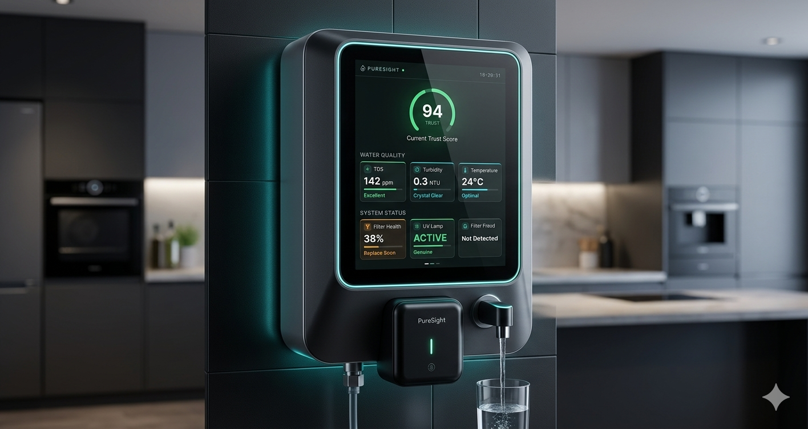

Millions drink from public water coolers every day with no way to know if the water is actually safe. PureSight puts the answer on the screen — right where you're standing.
PureSight attaches to any existing water purifier and shows live water safety data directly on the screen.
Simulate a scenario
Future concept
Future Aqua imagines PureSight built directly into modern water systems, where safety is not hidden inside pipes or filters.
The display turns water quality into something anyone can understand in one glance: trust score, filter life, UV status and live purity data.
It shows the direction PureSight can grow toward: public coolers, offices, homes and shared spaces where clean water should never be a guess.

How it works
Clips onto Aquaguard, Kent, Livpure — any brand. No replacement, no plumbing changes.
TDS, turbidity, temperature, UV health, filter life, filter authenticity — all live.
Walk up, read the screen, know instantly. The answer is always visible.
Design decisions
If someone has to take out their phone, you've already lost them. The screen answers before they think to ask.
TDS and NTU mean nothing to most people. The Trust Score collapses everything into one answer. The detail is still there — just not in the way.
A red number isn't enough. When a fake filter is detected, the screen reacts — dramatically. Designed to be impossible to miss.
PureSight turns a private maintenance problem into a visible public signal. Anyone can look at the screen and know whether the purifier deserves trust.
Where it matters
Employees should not have to trust maintenance blindly. PureSight makes every refill point visibly accountable.
When hundreds drink from the same purifier, the screen becomes a simple public signal: safe, caution, or do not drink.
In sensitive spaces, water safety needs more than assumption. Live filter, UV and quality status reduces invisible risk.